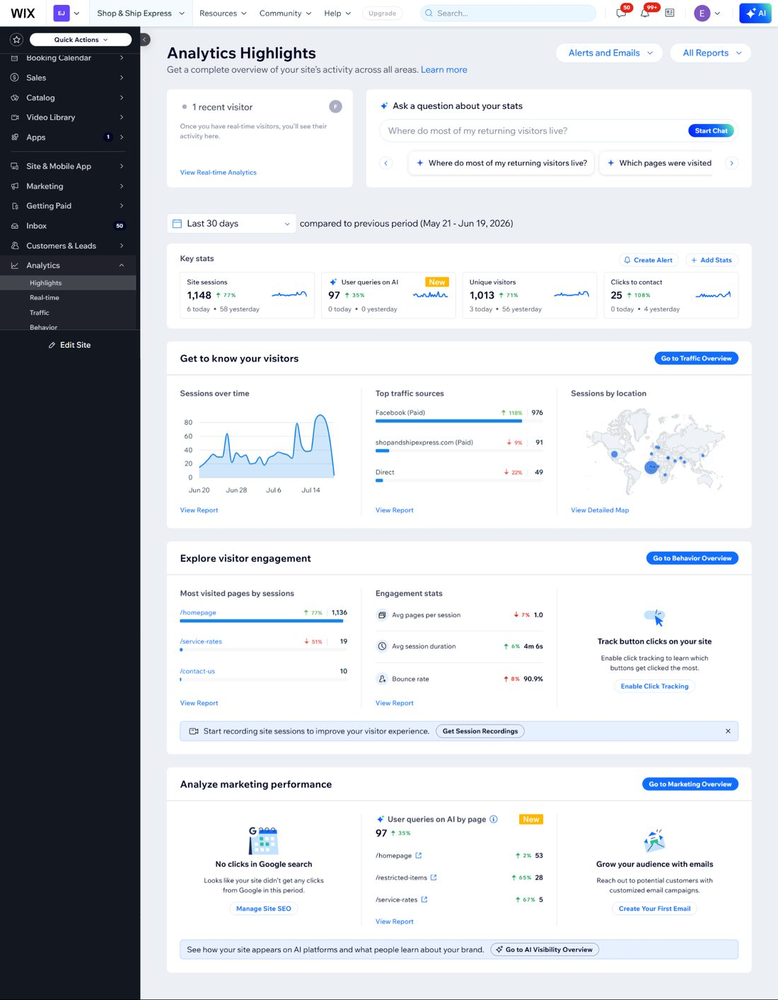

Case Study
Shop & Ship Express Analytics
A Wix analytics view showing traffic, visitor behavior, top pages, contact clicks, sources, and AI visibility signals.

Wix AnalyticsAnalytics Visibility
What the business needed
The business needed to understand what was happening on the website instead of only judging by appearance.
What I built from scratch
- Review of sessions, visitors, and clicks to contact
- Traffic source visibility
- Most visited pages review
- Engagement and behavior review
- Marketing and AI visibility signals
Why this matters
This helps the business see what people are doing and decide what page, CTA, or traffic source needs attention next.
Related service
This project connects to Analytics & Website Visibility.
Simple summary
I built the website from scratch and used the sections you can see in the screenshot as the solution: clear hero, services, proof, CTA, contact, FAQ, booking/shop/enquiry path, or analytics visibility depending on the business.